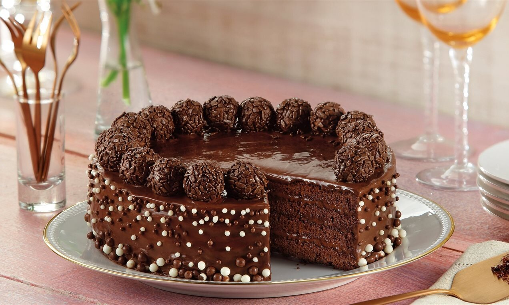
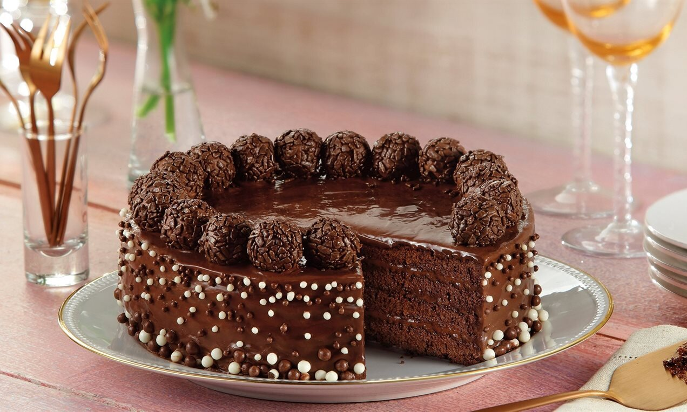

1 xícara (chá) de Chocolate em Pó NESTLÉ DOIS FRADES
1 xícara (chá) de Leite Líquido NINHO Forti+ Integral
Como preparar?
1. Em um recipiente, misture a farinha de trigo, o açúcar, o Chocolate em Pó DOIS FRADES, o fermento e o bicarbonato peneirados.
2. Junte o óleo, os ovos e a água fervente, misturando bem.
3. Despeje a massa em uma forma de furo central (24 cm de diâmetro) untada com óleo e polvilhada com farinha de trigo, e leve ao forno médio (180°C), preaquecido, por 40 minutos.
 
